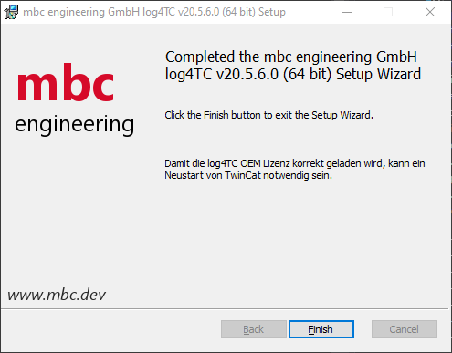
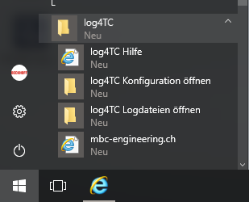
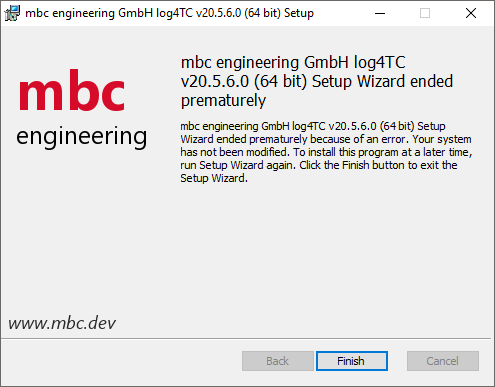

Installationsanleitung von log4TC
Setup
Den aktuellen Release von Log4TC kann hier geladen werden. Achten sie auf die Ziel Architektur x86 bzw x64!
Voraussetzungen
- TwinCat 3.1 (min. 4022.00)
- Administrationsrechte für die Installation
Nur Service:
- min Windows 7 SP1 / Windows Embedded Standard 2009
- Microsoft .NET Framework (mindestends 4.6.1, empfohlen 4.8)
- ADS Router - TC1000 | TC3 ADS
Beispiel Installation
Vorgehen zur Installation auf einem Zielsystem wie einem C6015 mit Windows 10 und einer x64 Architektur.
- Stellen Sie sicher das alle Anwendungen geschlossen sind.
- Kopieren des MSI Mbc.Log4Tc.Setup(x64)v20.5.6.0 auf den Zielrechner. Führen Sie das MSI setup aus.
- Akzeptieren Sie den
log4TC Software-Lizenzvertrag. - Wählen sie die gewünschten Features. (Nähere Beschreibeung hier
- Durch Klicken auf
Installwerden alle notwendigen Dateien auf das System kopiert und der log4TC Windows Service mit dem Namenmbc log4TC Servicegestartet.

Features
log4TC Service
Note
Dieses Feature erscheint nur wenn sie ein ADS Router - TC1000 | TC3 ADS installiert haben.
Beinhaltet
- Windows Service zum schreiben der generierten Logmeldungen aus TwinCat
- Konfiguration Links im Startmenü

log4TC TwinCat 3 Bibliothek
Note
Dieses Feature erscheint nur wenn sie TwinCat 3.1 Engineering (XAE) min. 4022.00 installiert haben.
Beinhaltet
- Installiert die log4TC Twincat 3 Bibliothek lokal
- Bereitet die OEM Lizenz zur Registrierung für die Produktive Benutzung vor
- Kopiert das getting starded Projekt unter
C:\ProgramData\log4TC\gettingstarded - Hilfe Links im Startmenü
Bekannte Fehler
Setup endet mit dem Fehler: ... Setup Wizard endet prematurely because of an error. Your system has not been modified. ...
In diesem Fall ist ein Fehler aufgetreten.

Starten sie das setup erneut mit der Kommandozeile ausgeführt als Administrator. Navigieren Sie in den Ortner mit dem MSI Setup per cd [folder]. Geben Sie folgendes ein: msiexec.exe /i "[setup].msi" /l*v install.log. Wenden Sie sich anschliessend mit dem install.log an uns.